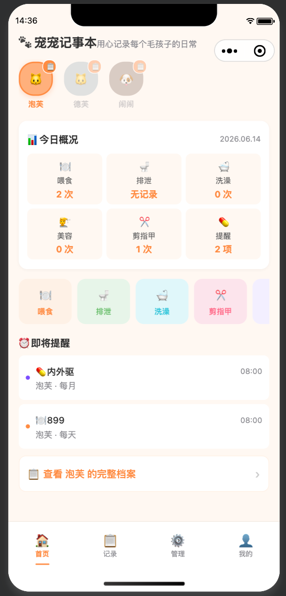
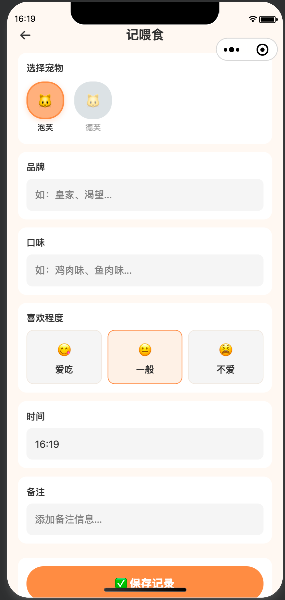
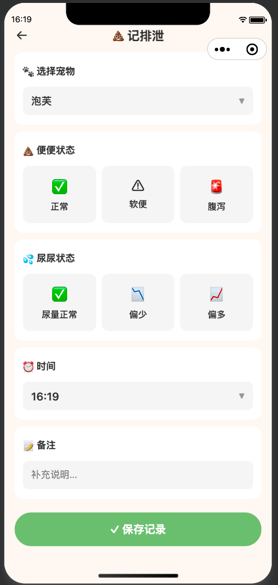
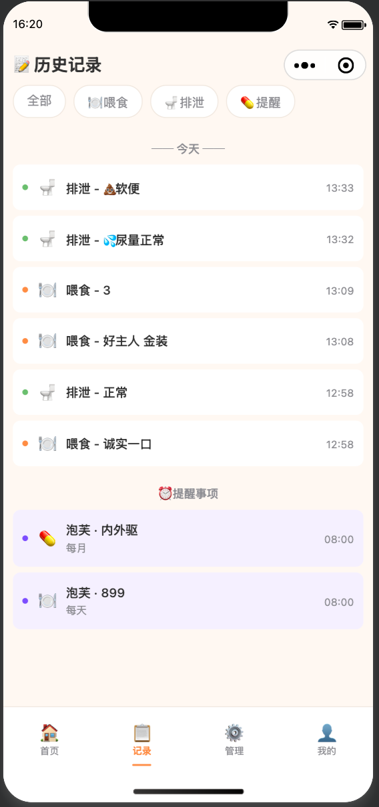
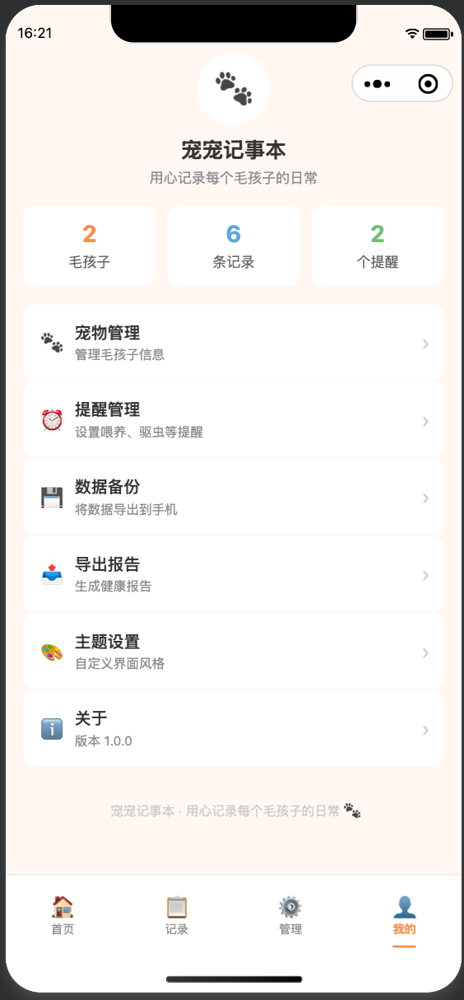

宠宠记事本 Pet Care Notebook
为多宠家庭设计的极简备忘录式微信小程序。多宠档案管理、喂食/排泄/洗护快速记录、 体重追踪、生日提醒、宠物档案页。单用户免登录，本地存储即开即用。
01 问题与洞察
多宠家庭在日常生活中面临大量琐碎的宠物看护信息管理需求：每只宠物的喂食品牌和口味偏好、 排泄是否正常、驱虫和疫苗是否按时、洗澡和美容多久做一次、指甲该剪了没—— 不同物种的喂养习惯和健康管理周期差异更大。仅靠大脑记忆或零散的聊天记录，很容易遗忘或混淆。
此外，洗澡、美容、剪指甲等洗护记录同样需要管理，才能掌握每只宠物的护理周期。 宠物的生日和体重变化也是主人非常关心的信息——生日到了需要庆祝，体重异常需要及时关注。
市面上缺少一款足够轻量、专注于"多宠日常记录"而非社交/电商/医疗的工具。 用户需要一个开箱即用、交互简洁的备忘录式应用，能够快速记录每只宠物的日常， 在首页一目了然地看到今日概况，并为每只宠物建立完整的数字化档案。
✅ 单用户免登录 — 微信身份直接使用，无注册流程
✅ 多宠切换 — 首页快速切换，数据按宠物隔离
✅ 快速记录 — 喂食、排泄、洗护均在两步内完成
✅ 今日概况 — 喂食/排泄/洗护次数、待办提醒一目了然
✅ 宠物档案 — 照片、性别、品种、生日、体重、备注、记录统计集中展示
✅ 本地存储 — 即开即用，无需网络
02 页面结构
首页
宠物切换栏 · 今日概况 · 快捷记录入口 · 即将提醒（含生日）
喂食记录
品牌 · 口味 · 喜好程度 · 时间 · 备注
排泄记录
便便状态 · 尿尿状态 · 时间 · 备注
洗澡记录 🆕
洗护产品 · 配合程度 · 时间
美容记录 🆕
服务项目（修毛/修剪等）· 时间
剪指甲 🆕
简洁单页 · 快速记录
宠物档案 🆕
大图头像 · 信息卡片 · 记录统计 · 体重展示 · 生日倒计时
历史记录
按宠物/日期/类型筛选 · 混合时间线
宠物管理
添加/编辑宠物 · 照片上传 · 性别/体重/备注
提醒管理
驱虫 · 疫苗 · 洗澡 · 生日 · 滑动删除
管理页
洗护快捷入口汇总
我的
数据统计 · 关于信息
03 核心功能
多宠一键切换
首页顶部切换不同宠物，数据完全隔离，每只宠物有专属主题色
今日概况看板
喂食次数、排泄次数、洗护记录、待办提醒一目了然，掌握每日照顾情况
两步快速记录
喂食、排泄、洗澡、美容、剪指甲均可在两步内完成，打开即记，用完即走
Emoji 喜好标记
通过 emoji 快速标记喜欢程度（喜欢/一般/不喜欢），直观追踪偏食
宠物照片 🆕
为每只宠物上传真实照片，档案页大图显示，直观识别
体重追踪 🆕
记录体重变化，历史数据可追溯，关注宠物健康趋势
洗护追踪 🆕
洗澡（产品/配合度）、美容（服务项目）、剪指甲，完整护理周期管理
宠物档案 🆕
集中展示宠物照片、性别、品种、生日、体重、备注及所有记录统计
定期提醒
驱虫、疫苗、洗澡、生日等周期性提醒，开关控制，滑动删除
数据统计
"我的"页面展示宠物数量、总记录数、提醒数量的整体概览
04 数据模型设计
采用适合小程序端内存操作的扁平数组结构，所有数据通过 app.globalData 统一管理。v1.1 新增性别、体重、照片、洗护记录类型及生日提醒。
05 技术栈与设计系统
🎨 设计系统
📐 架构决策
- 全局数据层 — 所有数据集中在
app.globalData，通过统一 save/get 方法读写 - 统一 records 数组 — 喂食、排泄、洗澡、美容、剪指甲共用 records 数组，type 字段区分，简化查询逻辑
- 照片处理 — 使用 wx.chooseMedia 选择照片，本地临时路径存储至 pet.photo 字段
- 体重追踪 — weightHistory 数组记录历史体重数据，档案页展示当前体重与历史记录
- 路由设计 — 底部 Tab 用 redirectTo 避免页面栈堆积，表单页用 navigateTo 入栈
- 持久化 — wx.setStorageSync 在每次数据变更时同步写入，启动时从缓存恢复
06 产品截图





07 PRD 文档
完整的 PRD 文档定义了 10 条用户故事（覆盖宠物档案、喂食排泄、洗护追踪、体重管理、生日提醒等场景）、v1.0→v1.1 升级规格（新增洗护记录、宠物档案页、体重追踪、照片上传、生日提醒）、详细的数据模型与字段定义、页面模块说明、首页与档案页原型设计，以及 V2.0 规划（云开发迁移、推送通知、健康报告、体重曲线图等）。